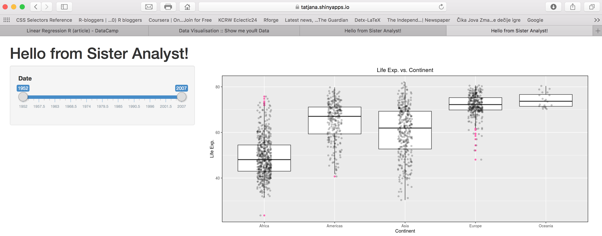

Shiny
Shiny: Creating Web Apps

What is Shiny App?
Shiny is a package from RStudio that can be used to build interactive web apps with R.
You can host standalone apps on a webpage or embed them in R Markdown documents or build [dashboards](http://rstudio.github.io/shinydashboard/. You can also extend your Shiny apps with CSS themes, htmlwidgets, and JavaScript actions.
Shiny combines the computational power of R with the interactivity of the modern web.
Shiny apps are easy to write. No web development skills are required.
Building a Shiny App Step by Step
From here on we will follow the steps given in Xaringan presentation available from 👉 here
You can download the GitHub repo created for this tutorial which contains the xaringan presentation slides and the app used in the presentation from: https://github.com/TanjaKec/LearnShiny
💪 There is a challenge:
Do you remember our dplyr challenge using group_by function to compute the median life expectancy for year 2007 by continent for gapminder data that we had to visualise?
Can you create a Shiny app for this visualisation?
 Have a look at this 👉😎
useful links:
Look for inspiration at rstudio shiny gallery
Getting Started with Shiny by CODING CLUB https://ourcodingclub.github.io/2017/03/07/shiny.html
Follow Dean’s blog: https://deanattali.com
An example: Cancer Research UK Cambridge Institute
Go further: Shiny Dashboard
Happy R Programming! 📢
© 2019 Tatjana Kecojevic